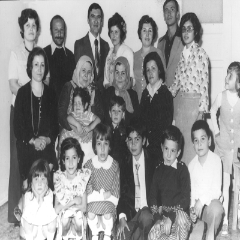

1974’te Bursa’ya geldik. Eve hep mavi üniformayla gelen babam hâkî bir kıyafetle işe gidip gelmeye başladı. Öğrendik ki Hava Lisesi kapatılıp yerine Işıklar Lisesi açılınca babam ve arkadaşları Kara Kuvvetleri’ne geçmişler. Babamın Bursa’da ilk tuttuğu ev korkunçtu. Eski Garajlar’ın orada dar bir apartmanın beşinci katı. Müthiş bir araç gürültüsü, ki bu araçlar benzinle değil, kornayla çalışıyordu. Evin önünden trafik dörtle beş arası bir saatte kesiliyordu, o arada uyudun uyudun. İki ay dayanabildik. Babam Çekirge’de Kutluevler’de bir ev tuttu. Kutluevler, Güllü Sokak, Bahadır Apartmanı No: 4, Bursa. Cennet gibi bir yer.
Bursa’nın dışında mahalle bittiğinde yemyeşil bahçeler, araziler başlıyor, biraz aşağıda Dobruca Köyü, onu geçtiğinde Uludağ’ın etekleri. Bir şehrin kıyısındasın, diğer yanın büyülü bir orman ve işin güzel yanı kötülük ülkeye inmemiş. Çocuğun sokakta istediğin gibi oynasın, karanlığa kadar. Kalbin küt küt atmaz.
Buradaki arkadaşları yine Ali Nacar, Rasih Kudat, Mustafa Uçak, Ziya Işık, Asaf Emin Kanalıcı, Erhan Keyvan, İdris Alhanlıoğlu, Vural Okur, Süleyman Erol, Daver Binbaşıoğlu ve adını hatırlayamadığım diğer amca ve teyzeler. Bu amcaların çocukları da doğal olarak bizim arkadaşlarımız oluyor.
Bir gün babam eve Romen bir boksör getirdi. Evet. Adem Şahin. Biz acaba besler, yer miyiz diye baktık. Balkan Şampiyonası’na gelmiş bir boksör. Babamla ahbap olmuşlar, adam sonra çocuğuna Erdoğan ismini koydu. Onun hikâyesi uzun, sonlarda İdris Ağabeyimden dinleyeceksiniz.

Demirci (1976)
Bursa’da yaşıyoruz. Yazın Zerrin Teyzemin düğününe gelmişiz. Soldan sağa: Elif, Sanem, Şefkat (standart olarak o yaş grubu kızların donları görünür), ben, Remzi, (diğer iki ufaklığı çıkaramadım). Orta sıra: Şenay Teyzem, kayınvalidesi (rahmetli oldu), kucakta Esin, anneannemin kucağında Alperen (oğlu Ali Kadri’yle aynı yaşta, aynı bakıyor), annem. Arka sıra: Nuray Teyzem, Ahmet Eniştem, Zinnur Eniştem, Zerrin Teyzem (üstüne üstlük gözleri de yeşildir), Zehra Teyzem, Cemil Eniştem ve ablam. Ablam, Bursa Kız Lisesi’nde okuyor. Hani, kızların bir dönemi vardır; civciv kadar tatlılıktan tavuk kadar güzelliğe geçtikleri, piliç diye adlandırılan, ama “culuk” kadar çirkin oldukları bir dönem. Aha, işte tam o dönem. Şimdi dünya güzeli.
Bursa’da evdeki kitapların çokluğu dikkatimi çekti, evimizin her tarafı kütüphane ve kitaptı. Bugün çoğunu hediye ede ede 3-5 bin kitaptan 500 tanesi kalmıştır. Dünya edebiyatı, Türk edebiyatı, felsefe, politika, din, tarih. Müthiş kitap okuyordu. Onun okuduğunun yirmide birini okumuş birine bugün rahatlıkla entelektüel diyebilirsiniz. Ellide birini okuyan Aysun Kayacı düzeyinde televizyonda tarih yorumu yapabilir.
Sonra, bir şeyi daha fark ettim; insanlar akşamları, hafta sonları bizim evde toplanıyor, babamın sohbetlerini dinliyorlardı. Kimi zaman tarih anlatıyordu, kimi zaman felsefe, tamamı ise ülke sevgisi üzerineydi.
Bir de babam 29 Ekim, 30 Ağustos, 19 Mayıs gibi millî bayramlarda, Bursa’nın merkezi Heykel’de yapılan büyük resmî törende, kürsüde kalabalıklara şiir okuma, nutuk atma gibi görevleri yapıyordu. O zaman çok hayran oluyordum. Düşün, sen sınıfta sözlüye kalkınca dizin titrer, adam binlerce insana mikrofondan bağırıyor, çağırıyor. (Kahramanlıkla ilgili konularda bağırmak gerekir.) Millette çıt yok ve o kadar fırçadan sonra, bitince, halkın alkış tufanı, olmaz böyle bir şey.
Babamın hayvan sevgisini de Bursa’da fark ettim. Özellikle oğlak çevirme, kuzu kapama, dana külbastı. Baharda tüm aileler, size anlattığım o sihirli ormanda oğlak çevirirlerdi olmaz böyle bir şey. Herkes mutlu, elektriği toprağa veriyorsun şahane rahatlık, şimdikiler bilgisayardan elektrik yükleniyorlar.
Yap-İşlet-Devret modelinin fikir babası babamdır. (Ben de fikir diyorum.) Bursa’da bir gün, babam eve bir koyunla geldi. Apartmanın ikinci katındayız, babamda resmî şapka falan, aylar yıldızlar, binbaşı. Hayvan rütbeye hürmeten arkada sessiz ve şaşkın bekliyor, ilk apartman ziyareti.
Şimdi, Türk asıllı Romen boksörden sonra biz çocuklar, doğal olarak, zenci melezi olan bir sumo güreşçisi beklediğimizden şaşırmadık. Annem, “Bu ne?” diye sordu. Babam, “Koyun, Şerif’e aldım” diye yanıtlayınca dünyalar benim oldu. Annem, “Evde besletmem” deyince, aşağıdaki kömürlüğe indirdik. Gözleri ela, kıvır kıvır. Adını Ela koydum. Çok iyi arkadaş olduk. Tarzan’dan daha zeki ve daha hızlı koşuyor. Yemin ederim, frizbi atsan getirecek. Ela her yere peşimden geliyor. Mahallede havam süper, kedisi, köpeği olan var; ama koyunu olan ilk çocuğum ve çok karizmatiğim, Tarkan ile Kurt ikilisini bir nevi yaşıyor, yaşatıyoruz. Ben konsantre Tarkan’ım. Bir sabah babamın “Nerede kaldı bu kasap?” dediğini duydum.
– Baba ne kasabı?
– Oğlum bugün Kurban Bayramı.
– Ee? Kurban aldınız mı bari?
– Aldık ya.
(Ya, buradaki “ya” var ya o beni epey bir kıllandırdı.)
– Baba, ben niye görmedim kurbanı ?
– ...
– ?
Babam bana gökten inen koçu, Hz. İbrahim’i anlatıyor; ama ben hüngür hüngür ağlıyorum.
Birkaç yıl bana et yediremediler. Hâlâ kıllanırım, “Kurban zamanı koyun pahalı olur diye bana dört ay hayvanı besletti mi?” diye. Yap-İşlet-Devret modelinin ilk başlangıcı 1970’lerin ortalarına dayanır: Al-Beslet-Kurban et şeklinde.
Yine de kitabın ruhuna uygun olarak şöyle bitirmeliyim: Babam bana o günlerde zor da olsa dinî akidelerimizi öğretti. (Bkz. Cüppeli Ahmet Hoca’nın doğuşu.)
1977’de babamın tayini Çankırı Astsubay Hazırlama Okulu’na çıktı. Ablam, Bursa Kız Lisesi’nde son sınıfa gidiyordu. Üniversite sınavına gireceği için biz ailecek Bursa’da kaldık, babam tek başına Çankırı’ya gitti. Bu arada omzundaki aylar, yıldızlar artıyordu. Bir yıl babasız Bursa’da yaşadık. En çok soğukta aşağıdaki kömürlükten büyük kovayla kömür taşımak zor geliyordu. Babam kimi hafta sonları geliyordu. Orada NBC Okulu (Nükleer, Biyolojik ve Kimyasal Okulu) diye askerî bir birliğin misafirhanesinde bekâr koğuşunda kalıyordu. Bize hiç şikâyet etmedi.
Ablam dershaneye falan gitmeden Ege Üniversitesi Diş Hekimliği Fakültesi’ni kazandı (sizin anlayacağınız Ege Dişçilik). 1978’de ailecek Çankırı’ya gittik. Lojman çıkana kadar okulun yakınındaki bir evin ikinci katında iki, üç ay oturduk, balkonundan vişne yenebilen bembeyaz bir evdi. Lojman çıkınca, Çankırı Astsubay Okulu’nun aşağıdaki nizamiyesinin yanındaki üç eski lojmandan ortadakinin en üst katına yerleştik.
Buradaki en büyük vaka, taşınmamızdan birkaç ay sonra, babamın bir akşam eve zil zurna gelmesidir. Arkadaşları eve getirdiler, uçmuş ki ne uçuş. Ondan önce ve sonra hiç içtiğini görmedim, görmemiştim. Meğer, “Kızımdan ayrılıyorum, İzmir’e okumaya gidiyor” diye efkârlanmış.
Hâlâ, “Baba az alkolik değildin, bize çok çektirdin” der gülüşürüz; biz tabii. Babam gülmez “İyi değil o” der; “öyle değil o.”
NBC’de kaldığı odayı gördüm, dört duvar, askerî cezaevi gibi bir yer, hiç bize şikâyet etmedi. “Ben şuna katlandım, buna katlandım sizi okutacağım diye” demedi.
Ben Çankırı Merkez Ortaokulu’nu bitirip 1979’da Kuleli’yi kazandım. Terör dönemi herkes çocuğunu askeriyeye sokup kurtarmak istiyor. Annem gitmemi hiç istemedi, ben istedim mi hiç hatırlamıyorum.
Babamla önce Ankara’ya gittik, sonra bir sabah altı gibi Üsküdar’a indik. Yazdı, ama soğuktu.
Tuttum elinden okula bıraktı beni.
Şimdi bile ağlıyorum.